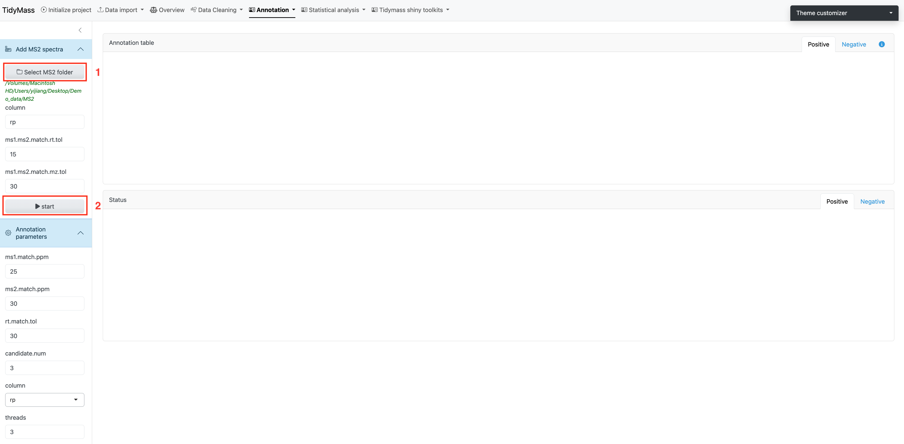
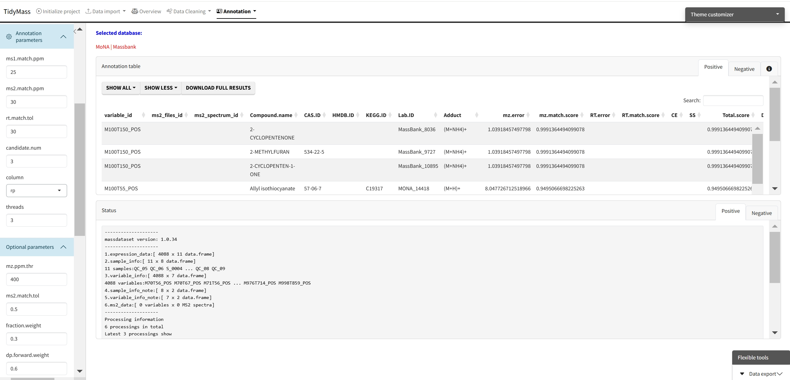
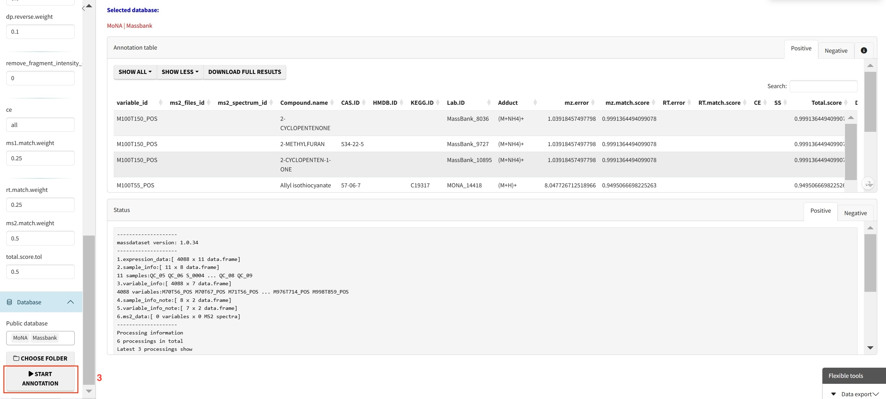

3 Downstream data processing
3.1 Metabolite annotation
Metabolite annotation can be performed based on in-house and available open-source databases.
To perform metabolite annotation, you need to click SELECT MS2 FOLDER and import MS2 data first.

Then click START.


We also need necessary MS2 databases for metabolite annotation, you may download these databases from metid website. You can also use Tidymass to build your own database, but please be noted that the format should be in “.rda”.
After the download is complete, place them in a new folder and click CHOOSE FOLDER.
Here we also provide some public databases and you can simply select them to perform annotation without downloading anything.
